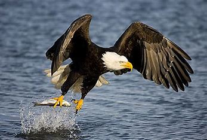
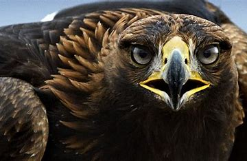

El águila es uno de los animales más rápidos del mundo, tiene la capacidad de volar a más de 130 kilómetros por hora y durante su vuelo, aprovecha las corrientes térmicas, o corrientes de aire caliente en ascenso. Volando en círculos dentro de la corriente, va ganando cada vez más altitud. Al llegar a determinada altura, planea hasta encontrar una nueva corriente. Puede permanecer en el aire durante horas casi sin consumir energía.
El águila (Aquila chrysaetos) es un ave de rapiña de gran envergadura que pertenece al orden de los Accipitriformes, alcanza un tamaño de entre 70 a 95 cm y llega a pesar desde 450 gramos hasta 7 kilogramos, puede llegar a vivir hasta 25 años y se encuentra en cualquier parte del mundo, a excepción de la Antártida. Si por algo destaca el águila delante de otros animales es por su anatomía, posee un cuerpo estilizado y aerodinámico con amplias alas, cabeza pequeña y ojos grandes. Su plumaje generalmente es de color marrón parduzco o grisáceo, dependiendo de la variedad de águila de la que se trate. La visión es una de sus características principales al punto de que este animal puede ver desde kilómetros de distancia a su objetivo, de hecho su capacidad para ajustar rápidamente el enfoque de los objetos le permite mantener una presa o un cadáver a la vista durante el largo descenso en picada. Además, tiene garras grandes, duras y afiladas, que usa como una especie de pinza para sujetar a sus presas.
El águila se encuentra en cualquier parte del mundo que tenga un clima adecuado, es decir, que no sea demasiado frío ni con temperaturas muy altas, por esta razón no es posible que vivan en la Antártida. El mayor número de águilas de las que se tiene registro están en el hemisferio norte.
Las águilas son animales carnívoros, de ahí que necesitan alimentarse de otros seres vivos, razón por la cual son expertos cazadores. Todas las especies de águila comen conejos debido a que es un animal muy fácil de encontrar en los bosques, además de ser numerosos e indefensos lo que facilita la caza por parte del ave. Asimismo algunas especies de águilas se alimentan de animales marinos y hasta de monos. Si el águila no encuentra algún animal del que alimentarse puede llegar a comer carroña, aunque esto lo toma como una ultima opción, amenos que se trate del águila calva.
Varias especies de águilas se encuentran hoy día en peligro de extinción especialmente por la acción el hombre, tanto por la caza como por la deforestación de las zonas en las que vive el ave y también por la colocación de tendidos eléctricos en los bosques lo que ha hecho que algunas águilas choquen con cables de alta tensión y se electrocuten.
